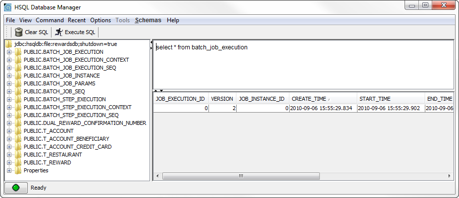

In this lab you'll see how Spring Batch allows dealing with errors during batch processing, both by skipping invalid items and by allowing you to restart failed job instances where the job resumes where it left off.
What you will learn:
Configuring skipping and restarting
How Spring Batch keeps track of your job executions to allow resuming a jailed job instance
How to be informed of skipped input items
How to limit the amount of allowed restarts for a step
Specific subjects you will gain experience with:
Batch namespace support for skiping and restarting
Implementing a SkipListener
Estimated time to complete: 45 minutes
The instructions for this lab are organized into sections.
You're going to use a batch job that reads lines of dining information from a comma-separated
value file, calls our RewardNetwork.rewardAccountFor() method from an
ItemProcessor, and then writes a simple report to the Console.
The first thing to do is to complete the job definition.
Start with the batch-execution-config.xml file in the
src/main/resources folder. Here the job registry
and repository are defined, as well as a simple job launcher and some other infra-level
components. Like in the previous lab, the actual batch job is defined in a separate file.
Open the batch-job-config.xml file. Notice that it includes the
app-config from the common rewards project, which
means that the rewardNetwork bean and its dependencies are available
for the job. There's also the start of a reader and a simple bean for a writer, but you
still have to define the actual batch job.
If you look at the db-config.xml file, you'll notice that the
application uses an embedded HSQLDB database that's stored on disk. Labs so far have only
used in-memory databases, but in this lab you'll need to persist state between various
runs.
If you inspect the integration-config.xml file, you'll see that a
simple file-based inbound channel adapter has been configured to watch a
spool directory for .csv files, which are then
picked up by a DiningRequestsJobLauncher. Open this class and see
how it launches the injected job using the injected launcher by creating some
JobParameters containing a resource path for the file that the
Spring Integration adapter picked up from the spool directory.
TODO 01: Open batch-job-config.xml and
define a job called diningRequestsJob. Give the job a step and in
that step, configure a tasklet and a chunk. Let the chunk's reader attribute refer to
the existing diningRequestsReader bean and its writer attribute to
the reportWriter. Set its commit-interval to 10.
Although we could create a dedicated class that implements
ItemProcessor and invokes the
rewardAccountFor method on the rewardNetwork
bean, Spring Batch can actually generate that code for you. Inside the
<chunk> element, add a
<batch:processor> element. Provide it with a
<ref> child element that refers to the
rewardNetwork bean and an adapter-method attribute
that refers to the rewardAccountFor method.
TODO 02: Although a start has been made with configuring the
diningRequestsReader bean, it's not finished yet. Please complete
it by setting the Resource
from which the reader should read the input file from. Since the reader shouldn't hard-code
the path of its input file, we can use a SpEL expression to obtain the value of a job parameter
called input.resource.path.
![[Tip]](images/tip.png) | Tip |
|---|---|
The parameters map can be accessed using the |
| Tip |
|---|---|
When placing SpEL expressions within a value tag, you should enclose the expression
within |
Since this value is only available when the job is launched, give the reader bean a
step scope! This means the expression will be evaluated when the step
is being executed, so when the job parameters actually exist.
TODO 03: As you can see, the diningRequestsReader
is already configured to read a number of fields from each
line of the field, and has even defined their names.
You'll have to write the code to convert the resulting
FieldSet into an actual Dining
instance. Modify the DiningFieldSetMapper class within the
rewards.batch package. Extract the fields from the
FieldSet by name and use them to create and return a
new Dining instance.
| Tip |
|---|---|
The |
The date field uses the yyyy-MM-dd date format.
Now switch back to the job config xml file and complete the diningRequestsReader by
injecting an instance of the new DiningFieldSetMapper into the
inner DefaultLineMapper bean.
TODO 04: Open the BatchTests class in the
rewards.batch package of the test source folder. This file contains
a number of tests that are currently all marked with
@Ignored. The test is autowired with a job launcher and
the job you just defined. It uses an in-memory database, so it won't interfere with
the application that you'll run later which stores its database on disk.
Remove the @Ignored from the
regularJobSucceedsWithValidInput method and run the test.
Make sure that the test passes: if it doesn't, have a
good look at the output and stacktraces in both your JUnit View as well as the Console
to spot the cause of the error. If you cannot get the test to pass, ask your
instructor for help.
In the real world, batch input isn't always under your control and can therefore contain invalid data. Spring Batch allows you to deal with the resulting errors in various ways, including skipping it.
TODO 05: You've now tested that your job works when its input is valid. But what happens if the
input contains invalid items? To test that we've provided you with another input file
that contains a single error. Open the diningRequests-broken.csv
file and see if you can spot the line with the invalid input. Note its line number.
| Tip |
|---|---|
If you have Excel installed, then right-click the file and choose "Open With -> Text Editor" to avoid opening the file in Excel! |
Now remove the @Ignored annotation from the
regularJobFailsWithInvalidInput method and run the tests
again. Notice that the tests asserts the
FAILED exit status for the job when the input is invalid. Check the
console to see how Spring Batch reports the cause. The original exception is wrapped
in a FlatFileParseException and this exception and its
stacktrace are reported by the FlatFileItemReader and also the
AbstractStep, ultimately causing the job to fail.
TODO 06: Create another job definition by copying your existing one and
renaming the job to skippingDiningRequestsJob. Also change
the step name, since the step id has to be unique across jobs. Now set the chunk's
skip-limit attribute to 1 to indicate that we'll
tolerate at most one error. To indicate which errors are considered skippable, add a
<batch:skippable-exception-classes> child element to the
chunk and include
org.springframework.batch.item.file.FlatFileParseException.
![[Note]](images/note.png) | Note |
|---|---|
Use code assist (Ctrl+Space) inside the skippable-exception-classes element to see
what's available. Also, note that we don't include the
|
TODO 07: Switch back to the tests.
First add an @Autowired annotation to the
skippingDiningRequestsJob field to have both jobs
injected.
| Note |
|---|---|
You might wonder why this works: both fields are of the same type, and Spring performs autowiring by type. Why won't it complain about the ambiguity of having two matching beans? Well, it turns out that Spring has added an extra mechanism for these type of cases: if the name of the dependency (the field, in this case) matches the name of one of the candidate beans then it will use that bean. Therefore, make sure that the names of the fields match the names you chose for your job ids! |
TODO 08: Remove the @Ignore on the
skippingJobSucceedsWithInvalidInput test and run the
tests again. Note how this tests uses the same invalid input as the previous test, but
checks for an exit state of COMPLETED instead of FAILED. Make sure all tests pass
before you move on to the next step.
TODO 09: The last test showed that the job is now skipping the invalid input.
The FlatFileItemReader logs the
FlatFileParseException as an error, but you might want to act
on the skipping of an invalid item in your own code as well; for example, by writing
the invalid item to a separate file.
In order to get a callback when skipping occurs,
look at the DiningSkipListener class under the
rewards.batch package. This class implements the
SkipListener interface, but as we're only interested in
one of the three methods that interface defines it's easiest to simply extend the
SkipListenerSupport class provided by the framework.
The type is annotated with @SuppressWarnings("rawtypes"): you can use
the raw type here, since the method you'll implement doesn't use the type information.
Within the onSkipInRead method it simply
logs a warning using a Log4J logger that includes the message from the
Throwable that gets passed. In a real-life application you
could append the original line to a file, send a JMS message, an SNMP trap, or use a
Spring Integration gateway to put a message on a channel for further consumption.
Switch back to the job configuration and complete it by
configuring a <batch:listeners> element for the tasklet
inside the step of the skippingDiningRequestsJob with a
<batch:listener> element that contains an inner bean of type
DiningSkipListener.
Then run your tests again and check the output in the Console View for your new log
statement.
Not all errors can simply be skipped and ignored: sometimes you simply want to stop the batch job, report the error and have someone investigating the cause. If that person is able to fix the issue (s)he might want to restart the job, starting from the point where the input items weren't processed yet. Let's see how that would work for our job.
Open the rewards.batch.Bootstrap class. This class starts an
application context that includes the Spring Integration configuration you reviewed
earlier. After that, it simply waits while the spool directory is being polled for new
files until you press Enter in the Console View, after which it closes down. Closing
down properly will ensure a clean shutdown of the database that we're using, so please
use this method for all following steps where you want to stop the current
application. Now start the application.
At this point, you won't see much output yet.
Now copy the diningRequests-broken.csv file from the root of the
project into the spool directory. This will trigger your batch
job to run, and since this is the regular non-skipping job it will fail. Stop the
application by pressing Enter in the Console View. Refresh the project and you'll see
two new files, rewardsdb.properties and
rewardsdb.script, that make up your new database.
| Tip |
|---|---|
If you want to start with a clean database again later, simply delete these two files. |
Let's see what Batch has written in the database so far. Right-click the
HSQLDB Manager.launch file in the root of your project and select
"Run As -> HSQLDB Manager". You should now see the following application with all
the database tables listed:
|  |
Perform a couple of "select * from tablename" queries to inspect
the contents of the database, in particular the _EXECUTION tables.
Can you understand the numbers listed for the various COUNT columns in the
BATCH_STEP_EXECUTION table?
| Tip |
|---|---|
Remember that the commit-interval is set to 10! |
When you're done, close the manager client and proceed with the next step.
Open the diningRequests-broken.csv file from the spool directory
in the text editor and fix line 123 by removing the extra value at the end of the line.
| Tip |
|---|---|
Use Ctrl+L in Eclipse to quickly jump to a given line number |
Save the file and then restart the job by running the Bootstrap
class again. Read the output in the Console: does the job indeed restart by only
processing the items that weren't processed successfully yet?
TODO 10: When you think that restarting works OK, switch back to the tests and enable the
restartRegularJobAfterFixingInputSucceeds test
and see what it does. Run the tests and make sure they all pass.
| Note |
|---|---|
In order to test restarting with repaired input the test uses two different files.
Since the filenames are part of the |
The current jobs are allowed to be restarted as often as you like. In a real life situation, you might want to limit the amount of restarts allowed for a given job. Spring Batch easily allows you to do just that.
TODO 11: Switch to the job configuration and add a start-limit attribute
with a value of 3 to the tasklet of the
diningRequestsJob. This is the total
number of starts allowed, including the initial start, so this limits the number of
restarts allowed to 2.
TODO 12: Open the tests and remove the @Ignored from the
exceedingRestartLimitPreventJobFromRunningAgain method.
Check what the method does: it runs the job three times, checking for failure on
each run, and then asserts that another attempt at restarting results in a
StartLimitExceededException as the root cause of the failure
exception returned in the JobExecution. Run the tests and make
sure that they all pass.
When all tests pass you have completed this lab successfully. Congratulations!
You might like to tidy the output by suppressing the stack-traces from the exceptions that we are expecting as part of the tests. We don't care about them and they make the tests look like they are failing. (TODO 13). Warnings are output instead, so you can still see what is going on.
If you have some time left, you can work on refactoring the jobs XML configurations to
Java configuration. We'll use the same test, without any modification in the test logic,
to validate the configuration refactoring works. Before moving on to the refactoring,
ensure the BatchTests passes.
TODO 14: Change the @SpringApplicationConfiguration annotation
in the BatchTests class to use the SystemTestConfiguration
configuration class. The @SpringApplicationConfiguration has a classes
attribute to specify this.
TODO 15: Take a look at the SystemTestConfiguration configuration class.
It is the configuration entry point for the tests. It imports the infrastructure configuration class
(BatchExecutionConfig) and the jobs configurations class (BatchJobConfig).
It also declares an embedded DataSource bean.
TODO 16: Add the @EnableBatchProcessing annotation
to BatchExecutionConfig. This declares the Spring Batch infrastructure (job repository, job launcher, etc.)
See batch-execution-config.xml for the XML way: the annotation replaces all that XML code.
TODO 17: It's time now to configure the diningRequestsJob the Java way
(BatchJobConfig class). Some of the work is already done for you: skeleton of the configuration class,
most of the batch artifacts (reader, processor, writer, etc.) Here, you just need to refer to the appropriate
step in the flow method of the diningRequestsJob method.
TODO 18: You must now configure the diningRequestsStep. It needs
its reader, its processor, and its writer. Fortunately, all of these have bean already declared, you
just need to wire them. And don't forget the start limit!
TODO 19: Time now to configure the skip behavior in the skippingDiningRequestsStep
bean. You need to setup the exception to skip (FlatFileParseException) and the skip limit.
Don't hesitate to go back to the slides if you don't remember the exact syntax.
TODO 20: At last, add the skip listener to the step. The configuration is now complete, let's
check if everything works fine.
TODO 21: Run the BatchTests, it should pass if the Java configuration
is correct.
Congratulations, you refactored the jobs configurations to Java!